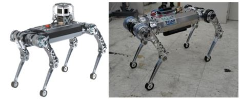

Robot Design
Hardware Platform
Our Lab directly creates all the components to experiment with a controller to which the learning algorithm is applied.

Raibo, made by Railab, has hardware that can withstand shocks under various conditions and operate robustly regardless of the environment. We also design its own driving units, which are key components consisting of decelerators, motors, encoders, and motor drivers. With its own form factor, it plays a major role in achieving high efficiency during operation.
{kind=link}
{kind=link}
Left : Raibo Driving-Units / Right : Raibo Leg
Through various simulations, we demonstrate that we can operate robustly and efficiently in various situations. The list of our work is shown below.
Hwangbo, C. D. Bellicoso, P. Fankhauser and M. Hutter, “Probabilistic foot contact estimation by fusing information from dynamics and differential/forward kinematics,” 2016 IEEE/RSJ International Conference on Intelligent Robots and Systems (IROS), Daejeon, Korea (South), 2016, pp. 3872-3878, doi: 10.1109/IROS.2016.7759570. Paper
Hwangbo, et al. “Variable impedance control for legged robots.” Dynamic Walking (2014). Paper